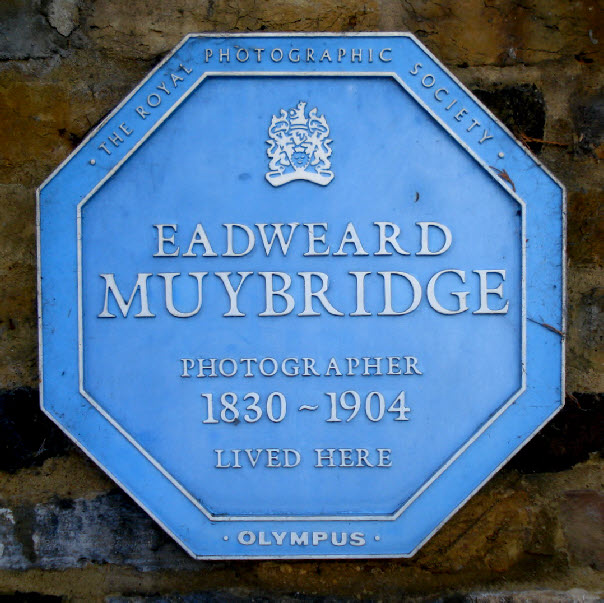

Death
Muybridge died on 8 May 1904 in Kingston upon Thames of prostate cancer at the home of his cousin Catherine Smith. Muybridge was cremated, and his ashes were interred at Woking in Surrey. On his headstone, his name is misspelled "Eadweard Maybridge".
In 2004, a British Film Institute commemorative plaque was installed on the outside wall of the former Smith house, at Park View, 2 Liverpool Road. Many of his papers and collected artifacts were donated to the Kingston Library, and eventually passed to the Kingston Museum in his place of birth.
Home Page